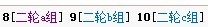

按钮，自己落子（提交棋谱时增加一个点即可）
按钮，自己落子（提交棋谱时增加一个点即可）点击板块列表上方的专题，快速进入对应的分组

开局选手摆出26种开局之一，并且提出要求本局需几个第5子。
后手方选手有权交换。-执白方在棋盘上任意位置放第4子。
执黑方按前面提出的要求在棋盘上放若干个第5子。这些第5子不能对称。
执白方从这些第5子中选择一个，然后放第6子。
开局阶段结束后，棋局按连珠规则正常继续进行。
网友旁观可以发言，但不得发与本局无关的内容
2、正式比赛将于11月5日开始，每步棋不超过2天时间（从对手提交棋局后开始计算，两天内必须提交应对），开局方按照编排规则，由组织者确定
3、提交棋局的方法是复制对手的棋谱代码，之后点击回帖中的按钮，自己落子（提交棋谱时增加一个点即可）
4、终局判断
投子认输，以回帖的形式回复“投子认输”；
超时，由网站管理员来确认此盘已经超时判负；
和棋，一方以回帖的形式发“求和”，另一方紧跟着回帖“同意和”，此盘算和，如果对方没有回复“同意和，则此盘继续对局，且原先提和方不得再提和。
［此帖子已被 失落刀 在 2010-11-7 12:09:23 编辑过］
［此帖子已被 雨一直下 在 2010-11-11 17:19:59 编辑过］
你的庞德兄弟弃权了
他不是一个人
还有大鱼小帮帮
［此帖子已被 失落刀 在 2010-11-7 12:20:15 编辑过］
［ 茗弈七夜 于 2010-11-7 12:36:39 时花20金币送鲜花一朵］
［ 茗弈七夜 于 2010-11-7 15:38:13 时花20金币送鲜花一朵］